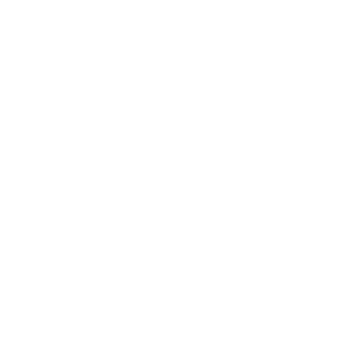

As a programmer, I now feel confident that I can teach myself anything - all I need is a cup of coffee, my laptop and a good playlist (make it 90s pop and maybe some japanese speed-metal and noise-rock). My greatest strength is my passion for learning and my persistence in overcoming challenges.
I also feel connected to the humanities and the arts. Before I entered CS, I completed a Bachelor of Arts in social sciences and wrote my thesis on the topic of technology use for social services. If you read this far, you must really be interested in me! In that case: Let's connect!
Enterprise Integrations at UL Solutions
Since 2023 I've been working on Stages, a process management platform used by engineering companies in regulated industries. I build and maintain REST integrations that connect it to tools like Jira Cloud, ServiceNow and SharePoint Online, and I co-developed a Jira Cloud app running on Azure Functions (Java, TypeScript). I've also built features end to end, from the Angular frontend down to the Hibernate/GraphQL backend.
Eclipse IDE Plugin
My CS thesis: an Eclipse plugin that makes it easier to work with @Annotations. Repo
Android App
Built during my software internship: a bilingual app for Marburg students with classes, meal plans, rooms, navigation and a calendar, backed by the university's SOAP API. Repo
Natural Language Processing
At CAISA lab I built a model that predicts political extremity in reddit posts. A handful of hand-picked psycholinguistic features slightly outperformed a BERT-based deep learning model.
Java
My main language at work since 2023. Extensive knowledge of OOP concepts and design patterns. Focused on a test-driven approach using Mockito, JUnit and more.
Python
Advanced knowledge with focus on NumPy and Pandas. Applied various machine learning and data science techniques during a 4-month research internship.
Android
I have built an Android app from the ground up, utilizing my university's SOAP endpoint, SQLite etc.

Functional Prog.
Ran a weekly tutorial at Marburg University, teaching the Scheme dialect Racket and general functional programming concepts.
Web Dev
Build frontend features in Angular and TypeScript at work. Also comfortable with plain HTML, CSS and JavaScript - this site is hand-written.
RStudio
Able to apply appropriate statistical tests in RStudio (Fisher, Wilcoxon, Chi-Square etc.) and visualize results with Shiny and ggplot.
C Language
Basic experience programming in C. First language I learned when starting to program. Got a little rusty...
PostgreSQL
Solid skills in SQL, as well as understanding of database theory (relational algebra, normal forms etc). Basic experience using JDBC API.
Machine Learning
Used machine learning libraries like sklearn and TensorFlow to fit models performing face recognition, predicting housing prices etc. Used Matplotlib for visualization.
Git
Extensive experience using git and GitHub for version control.